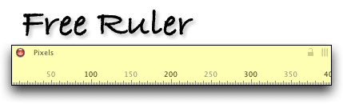

|

Free Ruler is a free screen ruler for Mac OS X.
Current Version:
Free Ruler Version 1.7b5, released January 2, 2007.
©2003 by Pascal. Free Ruler is, uh, free.
Features:
• A horizontal and vertical ruler which can be used independently or simultaneously.
• Measurement in pixels, inches, picas, or centimeters.
• Automatic alignment of rulers.
• The ability to group rulers and move them around as a unit.
• Shadowless rulers with customizable transparency.
• Interactive tick marks which follow the mouse location for more precise measurement.
• Independent resizing of rulers, from 200 pixels to 5000 pixels in length.
• Single key shortcuts for most ruler functions.
• Conversion assistant to set ruler resolution based on screen size and resolution.
• Unit converter utility for converting numbers between different units of measure.
• Did I mention it's free?
Download the current beta version:
*** Universal Binary ***
Works in Lion
(Currently lacks transparency support)
Download Free Ruler 1.7b5 for Mac OS X (2.8 MB).
Note: Free Ruler is only available for Mac OS X. It may work on Mac OS 9, but this has not been tested. It most definitely will not work on your stupid Windows PC.
Version History:
- Version 1.7b4 - July 19, 2006
General update for OS X Tiger. Recompiled using latest version of REALbasic. Yeah, I know. Still seems to be a resource hog. But it seems to behave better overall.
- Version 1.6 - March 10, 2003
Added customizable transparency, thanks to Alexander Cohen's excellent Window Alpha plugin. Modified grouping behaviour so that clicking a ruler brings both rulers forward, if grouped. Added a resolution assistant to set ruler conversion settings based on screen size. (This feature only works reliably on flat-panel LCD screens; it may not produce accurate results on CRT screens.) Various internal improvements.
- Version 1.5 - February 11, 2003
Finally figured out a way to make the rulers shadowless, thanks to a nice fellow named Fritz who pointed out Tildesoft's excellent Carbon Declare library.
Also added several other internal optimizations.
- Version 1.1 - February 23, 2002
Added lots of new features based on user feedback, including ruler alignment and 3 new units of measure. Added ability to modify rulers by pressing different keys on the keyboard. (See the Help menu in Free Ruler for a complete list of keyboard shortcuts.) Added lock icon to provide visual indication of group state. Added ability to copy ruler measurements to the clipboard. Reorganized menu bar. Implemented preference file so that Free Ruler remembers window locations and other settings.
Also fixed a lot of bugs and optimized different parts of the application. Redraw is much faster when resizing a ruler. Crosshair cursor behaves correctly when entering the menu bar. Interactive ticks hide themselves when dragging rulers around.
- Version 1.0 - February 13, 2002
Initial release.
The Most Frequently Asked Question
• Why don't you make it so the rulers can float above other applications?
Unfortunately, floating windows don't receive events the same way regular windows do, at least in REALbasic. Making the rulers float would eliminate the ability for rulers to respond to keystrokes, which to me is more important than floating. The main problem with rulers not floating is that they can easily get obscured by other windows. To help address this problem, I've modififed the grouping behavior in Free Ruler 1.6 so that if rulers are grouped, clicking any visible portion of a ruler will bring both rulers forward. I'm investigating the possibility of toggling the floating state of the rulers for a future version of Free Ruler.
Other Known Problems:
• The unit conversion assistant (in the Help window) does not work reliably on CRT monitors. It works best on flat-panel LCD screens.
• Rulers don't care if you drag them offscreen. If you drag a ruler completely out of view (easy to do when rulers are grouped), try aligning the ruler origins to bring it back into view.
• The first time a unit of measure is chosen, there is a slight delay while the application creates the tick marks to be displayed.
• Rulers must be brought forward before they can be moved around the screen or closed.
• The crosshair cursor appears in the title bars of some windows.
• Free Ruler was made with REALbasic. REALbasic is an amazing development environment, but it has its limitations.
Possible Features for Possible Future Releases:
• The ability to draw tick marks on either edge of the ruler.
• The ability to flip ruler origins, so that you can measure from right to left on the horizontal ruler or bottom to top on the vertical ruler.
• Customizable rulers for reading data points from on-screen charts and graphs.
• A percentage ruler: this would have 0% at its origin and 100% at the opposite end, with the percentage range running along the ruler.
• The ability to change the view scale of the ruler to something other than 100%.
• Ability for rulers to float above other application windows (see FAQ above).
• A ground-up rewrite in Cocoa.
Feedback:
Free Ruler is free software, which means I don't provide technical support for it. I make no promises about future releases. However, I welcome your feedback at pascal@pascal.com?subject=Free%20Ruler.
|